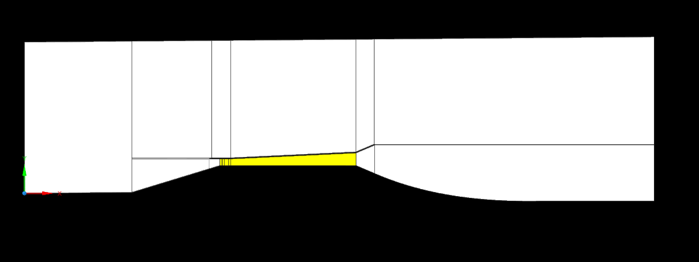
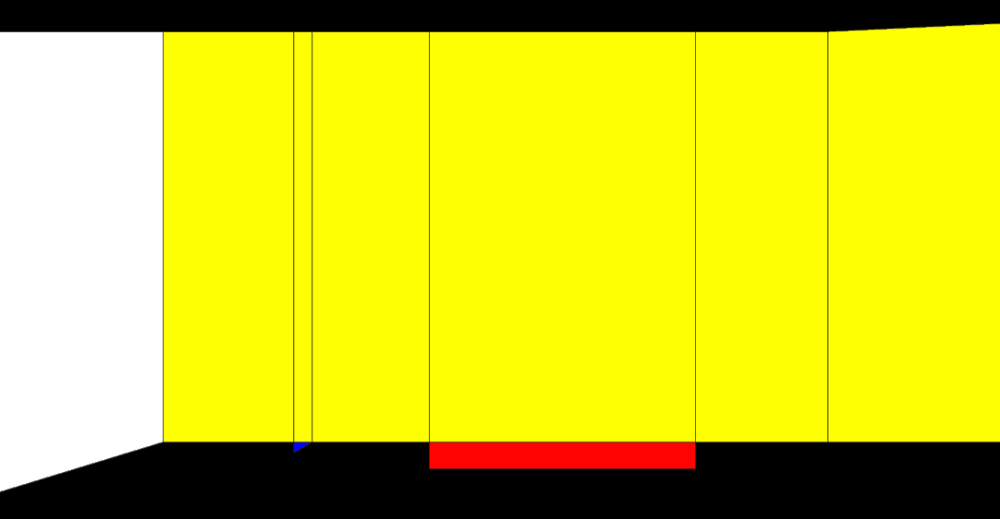
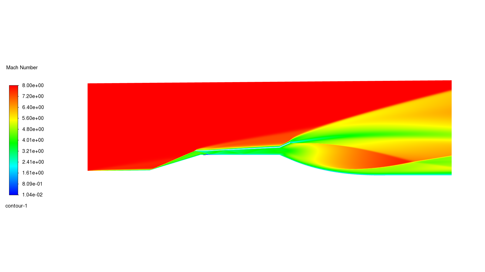
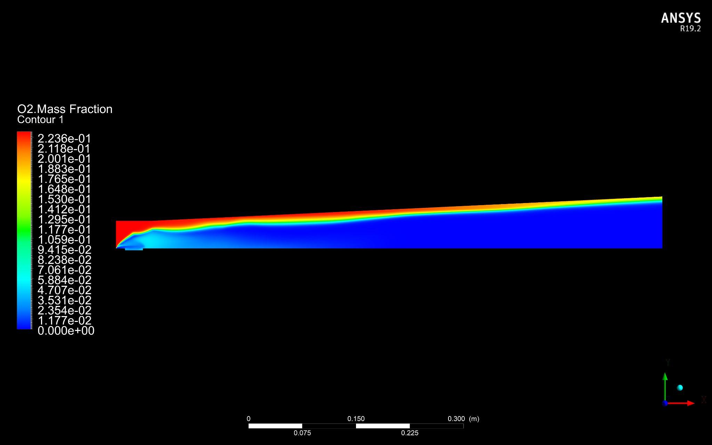
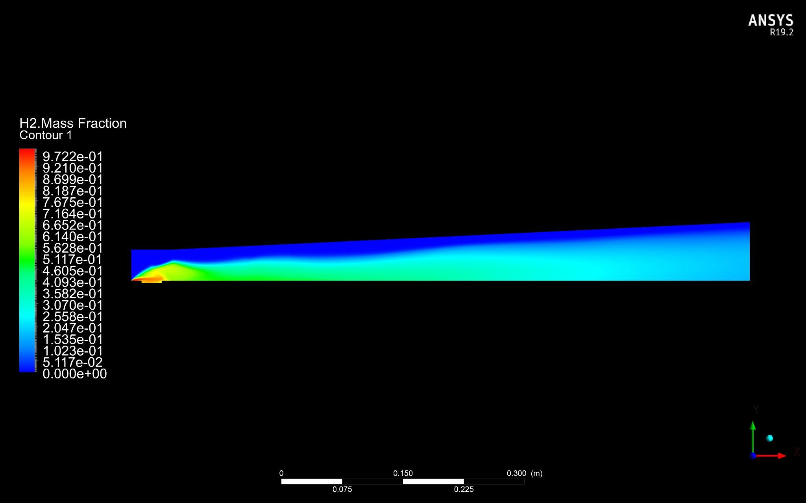
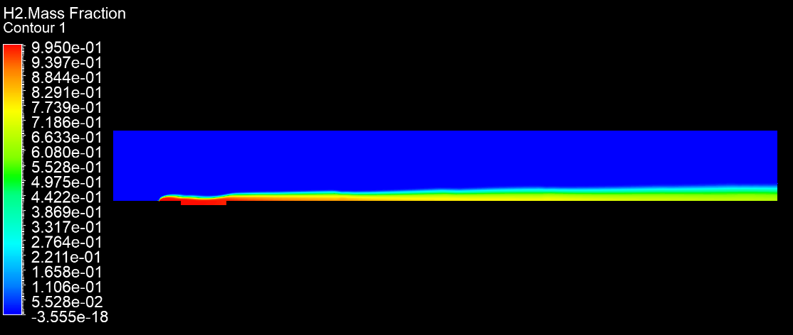

Vehicle
Hypersonic suborbital
Computational thermo-fluid analysis of a supersonic-combustion ramjet engine for a hypersonic suborbital vehicle, verifying a MATLAB engine model and comparing two combustion-chamber configurations.
Computational thermo-fluid analysis of a scramjet engine for a hypersonic suborbital vehicle, run to verify the engine parameters developed in a MATLAB model and to analyze shock behaviour and plume shape. Two combustion-chamber configurations were investigated: a constant-area chamber (pressure gain) and a variable-area chamber (constant pressure), with the flame holder and fuel composition held identical across both for a fair comparison.


The Mach contours show distinct flow characteristics across the engine's flow-zone regions, from inlet compression through to the exhaust. The plume is clearly visible in the stern region of the scramjet, and the flow is decelerated from a supersonic freestream to the regime needed for combustion before reaching the chamber.

Both configurations were evaluated on hydrogen-fuel burning species. In the variable-area configuration, water vapor mixes across the complete downstream domain; in the constant-area configuration, the water-vapor stream is squeezed against the chamber wall by the pressure rise further downstream. A streamline plot of the flame holder shows the circulation zone where the air-fuel mixture recirculates, holding the combustion flame and resolving the residence-time problem in the scramjet's combustion chamber. Flame-holder dimensions are set by the fuel-injector angle, here 45°.



A verified CFD model of a supersonic-combustion ramjet engine, cross-checked against a MATLAB engine-parameter model, with a quantified comparison between constant-area and variable-area combustion chambers on flow and combustion behaviour. Sponsored by ORIC, Air University, and the Government of Pakistan.